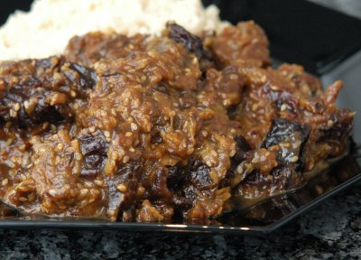

| Zutaten für 4 Personen: | |
| 3 El | Olivenöl |
| 800 g | Rindsvoressen z.b. Stotzen, in ca. 3 cm grossen Würfeln |
| 1 | Gemüsezwiebel |
| 3 El | glattblättrige Petersilie |
| 1 Tl | Zimt |
| 1 Tl | Kreuzkümmelpulver |
| 1/2 Tl | frischer Ingwer |
| 2 Briefchen | Safran |
| 1/4 Tl | Pfeffer |
| 1 Tl | Salz |
| 3 dl | Wasser |
| 1 El | Akazienhonig |
| 250 g | entsteinte Dörrpflaumen |
| Salz, Pfeffer | |
| 1 El | Sesam, geröstet |
Vor- und zubereiten: ca. 25 Minuten Schmoren: ca. 1.25 Stunden
Gemüsezwiebel und Petersilie fein hacken, Ingwer reiben. Direkt in den Brattopf geben.
Öl im Brattopf warm werden lassen. Fleisch und alle Zutaten bis und mit Pfeffer ca. 5 Minuten andämpfen
Anschliessend salzen.
Wasser dazugiessen, aufkochen, zugedeckt bei kleiner Hitze 45 Minuten köcheln
Honig und Dörrpflaumen beigeben, ca. 30 Minuten fertig köcheln, würzen, Sesam darüber streuen.
Dazu passen: Couscous, Fladenbrot
Betty Bossi Zeitung, 2005 Nr. 7 Seite 11
Pro Person: 26g Fett, 58 g Eiweiss, 36 g Kohlenhydrate, 2584 kJ, 618 kcal
Schmeckte am 17.7.2008 ganz ordentlich. Hatte noch Kardamom dazu gegeben. Sesam konnte ich im St. Anahof nicht finden. Das gab's dann aber im Reformlädeli. RE